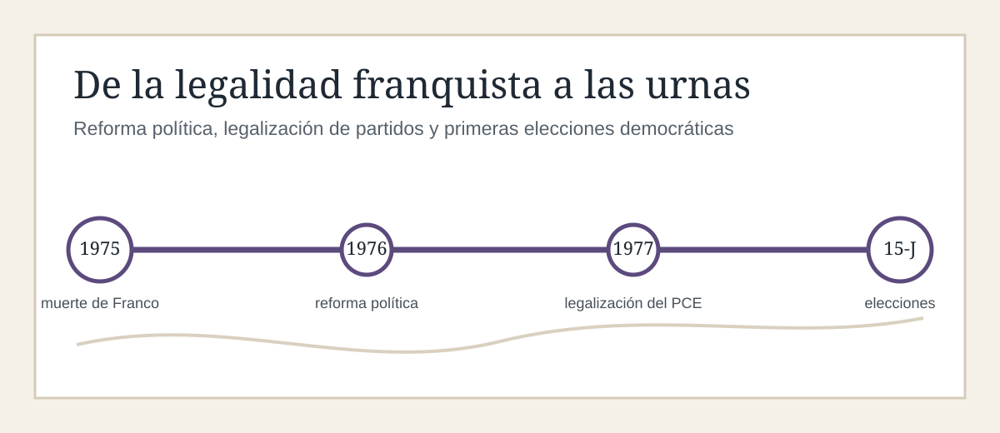
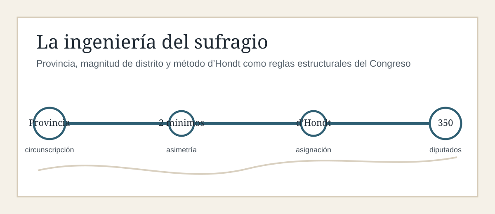
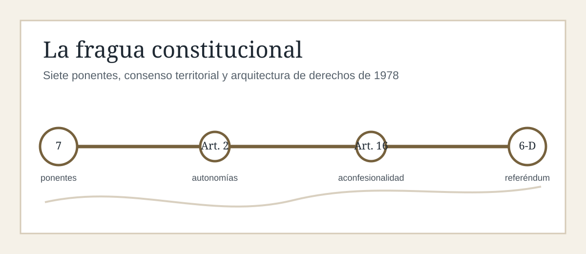
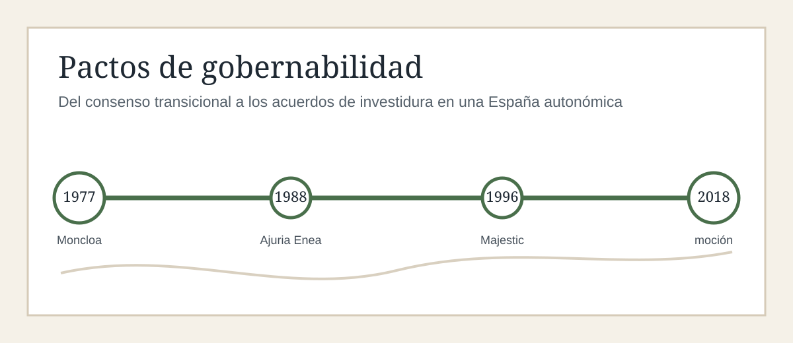
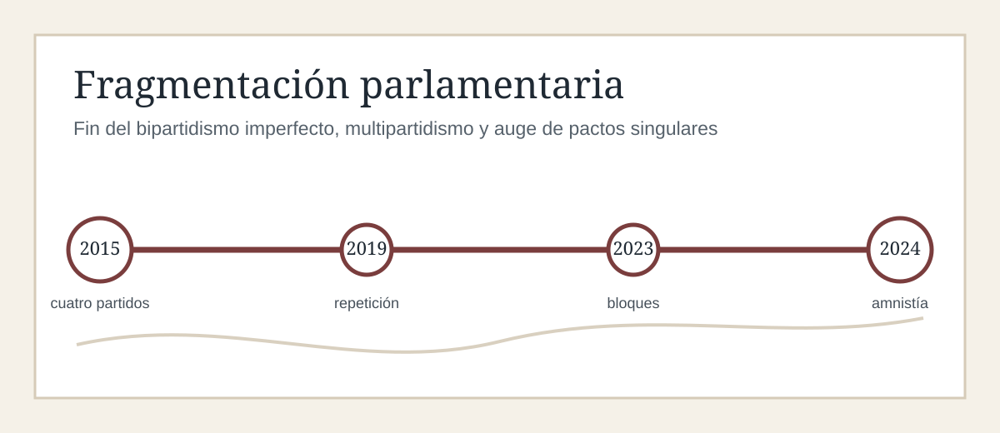

La muerte del dictador Francisco Franco el 20 de noviembre de 1975 no representó únicamente el cese biológico de un autócrata, sino la apertura de un complejo proceso de reconfiguración estatal que la ciencia política analiza como un fenómeno de transición consociacional y reforma legalista1. España se hallaba en una encrucijada donde las inercias inmovilistas del aparato franquista, conocidas coloquialmente como "el búnker", chocaban con la presión de una oposición democrática clandestina y una sociedad civil crecientemente secularizada y deseosa de homologación con el entorno europeo2. El tránsito hacia la democracia no fue una ruptura abrupta ni una simple continuidad modificada, sino una obra de ingeniería jurídica donde la legalidad vigente se utilizó para destruir la propia estructura autoritaria que la sostenía4.
El primer jalón de este proceso estuvo presidido por Carlos Arias Navarro, confirmado como presidente del Gobierno por el rey Juan Carlos I en diciembre de 19753. Arias Navarro encarnó la contradicción intrínseca de reformar el franquismo desde el franquismo3. Su programa político, autolimitado por el denominado "Espíritu del 12 de febrero" —formulado originalmente en su discurso de 1974 ante las Cortes de la dictadura—, intentó canalizar las demandas de participación mediante un restrictivo Estatuto de Asociaciones Políticas3. Este estatuto pretendía canalizar la pluralidad de opiniones a través de corrientes internas ligadas al Movimiento Nacional, excluyendo de manera tajante la legalización de los partidos políticos tradicionales, concebidos por el dogma falangista como gérmenes de la división nacional y la guerra civil5.
Esta timidez reformista resultó inservible5. Los sectores moderados y aperturistas del propio régimen, como Manuel Fraga Iribarne o Pío Cabanillas, declinaron adscribirse a una normativa que consideraban anacrónica y carente de homologación internacional3. La Revolución de los Claveles en Portugal en abril de 1974 y la creciente conflictividad obrera en las calles españolas evidenciaron que el tiempo de las reformas tuteladas había expirado5. La incapacidad de Arias Navarro para liderar una apertura creíble, atrapado entre las amenazas del búnker y las exigencias de la calle, condujo a su destitución por parte del monarca en julio de 1976, abriendo el camino para un cambio de ritmo histórico8.
El nombramiento de Adolfo Suárez, un joven político procedente del aparato del Movimiento, fue recibido con profunda suspicacia por la oposición democrática, que lo interpretó como una maniobra continuista3. No obstante, Suárez, bajo el tutelaje intelectual de Torcuato Fernández-Miranda, aplicó una estrategia de sutil deconstrucción jurídica del régimen4. La pieza clave de esta estrategia fue la Ley para la Reforma Política de enero de 197710. Esta ley, con rango de Ley Fundamental, no rompía formalmente con la legalidad de la dictadura, sino que utilizaba sus propios mecanismos de reforma para convocar unas Cortes bicamerales elegidas por sufragio universal, libre, directo y secreto, transfiriendo de facto la soberanía nacional al pueblo español4. Su aprobación en las Cortes franquistas constituyó un suicidio institucional de la elite orgánica del régimen, legitimado posteriormente por un abrumador respaldo del 94% de los votos en el referéndum de diciembre de 1976.
El desmantelamiento de la dictadura exigía una decisión de extrema audacia: la legalización de la oposición clandestina4. Mientras que el Partido Socialista Obrero Español (PSOE) y las fuerzas democristianas y liberales fueron legalizadas con relativa facilidad, el encaje del Partido Comunista de España (PCE) representaba la línea roja para las Fuerzas Armadas4. Durante el Sábado Santo, el 9 de abril de 1977, aprovechando el vacío vacacional y en una maniobra de consumada astucia política, Adolfo Suárez legalizó por decreto al PCE de Santiago Carrillo8. Este hito histórico, aceptado a regañadientes por el estamento militar a cambio de la asunción de la bandera bicolor y la monarquía parlamentaria por parte de los comunistas, desactivó la amenaza de una quiebra violenta y sentó las bases de la política de consenso que presidiría las primeras elecciones democráticas del 15 de junio de 197711.

La consolidación del nuevo marco democrático requería la edificación de un sistema electoral que garantizase tanto la representatividad de las diversas corrientes de opinión como la estabilidad gubernamental12. El Real Decreto-ley 20/1977, de 18 de marzo, sobre Normas Electorales, redactado a toda prisa por el Gobierno de Suárez, estableció la arquitectura fundamental de la toma de decisiones en las urnas10. Esta norma provisional reconoció el derecho al voto de todos los ciudadanos españoles mayores de edad (establecida entonces en los dieciocho años) inscritos en el Censo Electoral, determinando la incompatibilidad de cargos públicos de relieve, como los ministros del Gobierno, para presentarse como candidatos10.
El decreto de 1977 diseñó un Congreso de los Diputados de 350 escaños y un Senado de 207 miembros elegidos de forma directa por circunscripciones territoriales10. Para la Cámara Baja, la circunscripción electoral obligatoria pasó a ser la provincia, asignando a cada una de ellas un mínimo de partida de dos diputados con independencia de su volumen demográfico, a excepción de las ciudades de Ceuta y Melilla, que contarían con un único representante cada una14. Los escaños restantes hasta completar los 350 se distribuyeron de manera proporcional a la población de cada provincia15.
Este reparto territorial primó notablemente a las provincias con menor densidad de población —fundamentalmente de carácter agrícola y conservador— frente a los grandes núcleos urbanos e industriales15. La consecuencia directa de esta asimetría es que el valor relativo de un sufragio en provincias de baja magnitud (como Soria o Teruel) llegó a ser hasta cuatro veces superior al valor de un voto emitido en circunscripciones de alta magnitud como Madrid o Barcelona15.
La asignación de escaños a las listas de candidatos se estructuró a través del método d'Hondt14. Esta fórmula de proporcionalidad aproximada distribuye los escaños mediante la división de los votos válidos obtenidos por cada candidatura entre números enteros sucesivos () hasta igualar el número de representantes en liza en la circunscripción14. Los escaños se adjudican de manera decreciente a los cocientes más altos resultantes de este cuadro matemático14. Aunque el sistema d'Hondt es criticado con frecuencia por penalizar la proporcionalidad pura, la ciencia política contemporánea demuestra que el verdadero elemento distorsionador del sistema español no es la fórmula matemática en sí, sino el bajo tamaño o magnitud media de las circunscripciones provinciales15.
En provincias que reparten menos de cinco escaños, la barrera electoral efectiva se eleva de manera natural muy por encima del umbral del 3% establecido por la ley, actuando en la práctica como un filtro mayoritario que beneficia de forma sistemática a los dos grandes partidos nacionales o a los partidos nacionalistas fuertemente concentrados en un territorio, penalizando a las formaciones estatales medianas o minoritarias cuyos sufragios se dispersan sin alcanzar el mínimo necesario para obtener representación15.
Adicionalmente, el Real Decreto-ley 20/1977 perfiló de forma minuciosa las garantías operativas del proceso electoral con el fin de evitar las tradicionales sospechas de pucherazo asociadas a la historia constitucional decimonónica española10. Estableció la obligatoriedad de constituir Mesas Electorales integradas por ciudadanos elegidos por sorteo, clasificándolos en función de su nivel educativo (bachillerato o formación profesional) para desempeñar las funciones de presidente y adjuntos10. El cargo de miembro de mesa se decretó obligatorio, fijando estrictos plazos de cinco días para la alegación de excusas debidamente documentadas ante las Juntas Electorales10.
La votación se reguló mediante el depósito de sobres cerrados en dos urnas diferenciadas (para Congreso y Senado) custodiadas por el presidente de mesa, prohibiendo el acceso a los locales electorales de personas con armas o instrumentos susceptibles de ser usados como tales, bajo pena de inmediata expulsión y pérdida del derecho de voto13.
Esta normativa transitoria, que rigió con notable pureza los procesos de 1977, 1979 y 1982, fue finalmente codificada, perfeccionada y dotada de estabilidad jurídica mediante la promulgación de la Ley Orgánica 5/1985, de 19 de junio, del Régimen Electoral General (LOREG)12. La LOREG consolidó todos los elementos nucleares del modelo previo —los 350 escaños, el mínimo provincial de dos diputados, la barrera del 3% y la fórmula d'Hondt— e institucionalizó el uso de listas cerradas y bloqueadas15. Esta decisión de diseño, concebida originalmente para consolidar a los partidos políticos como los verdaderos vertebradores de la opinión pública frente a personalismos desestabilizadores, ha sido objeto de prolongados debates doctrinales debido a la escasa flexibilidad que otorga al elector para alterar el orden de los candidatos, reforzando la disciplina interna impuesta por las cúpulas directivas provinciales15.
Este módulo permite recorrer las elecciones generales desde 1977 hasta 2023 y comparar, de forma agrupada, cómo se repartieron los 350 escaños del Congreso entre las principales familias políticas.
La agrupación simplifica coaliciones y marcas electorales para facilitar la lectura histórica: AP/CP se integra en PP; PCE/IU/Unidas Podemos/Sumar se agrupan como izquierda alternativa; y los partidos territoriales se reúnen en una familia propia.
El gráfico interactivo se cargará automáticamente si JavaScript está disponible.

La legitimidad de las Cortes constituyentes elegidas el 15 de junio de 1977 se volcó de manera prioritaria en la redacción de una Carta Magna de consenso11. Para este fin, la Comisión de Asuntos Constitucionales y Libertades Públicas del Congreso designó una ponencia de siete diputados encargada de elaborar el primer borrador de la norma fundamental19. Estos ponentes, conocidos en la mitología política española como los "Padres de la Constitución", encarnaban la pluralidad del espectro ideológico surgido de las urnas19:
| Ponente Constitucional | Afiliación Política | Rol en la Ponencia y Debates Clave |
|---|---|---|
| Gabriel Cisneros Laborda | Unión de Centro Democrático (UCD) | Redacción de la estructura del Estado; debate sobre las autonomías20. |
| Miguel Herrero y Rodríguez de Miñón | Unión de Centro Democrático (UCD) | Defensa de la Corona y de la inserción de los derechos históricos forales20. |
| José Pedro Pérez-Llorca Rodrigo | Unión de Centro Democrático (UCD) | Geometría jurídica de consenso; posterior articulación de la política exterior20. |
| Gregorio Peces-Barba Martínez | Partido Socialista Obrero Español (PSOE) | Redacción de la carta de Derechos Fundamentales y Libertades Públicas20. |
| Jordi Solé Tura | Partit Socialista Unificat de Catalunya (PSUC / PCE) | Articulación del reconocimiento del pluralismo lingüístico y territorial20. |
| Manuel Fraga Iribarne | Alianza Popular (AP) | Defensa de las prerrogativas del orden público, la Corona y el concepto de unidad20. |
| Miquel Roca i Junyent | Minoría Catalana (CDC / UDC) | Articulación del derecho a la autonomía de las nacionalidades y regiones19. |
Los debates constitucionales fueron complejos y se desarrollaron bajo la constante presión de la inestabilidad social, la violencia terrorista y los ruidos de sables de los sectores castrenses involucionistas23. El encaje de la diversidad territorial del Estado constituyó el debate más enconado21. El célebre artículo 2 de la Constitución, que proclama la "indisoluble unidad de la Nación española" al tiempo que "reconoce y garantiza el derecho a la autonomía de las nacionalidades y regiones que la integran", fue el fruto de una laboriosa e incluso secreta transacción entre los ponentes de UCD, la Minoría Catalana y el PSOE21. El término "nacionalidades", largamente acariciado por los partidos de la periferia, generó una enérgica oposición de los sectores castrenses e inmovilistas del régimen anterior representados por Alianza Popular, resolviéndose finalmente mediante una compleja síntesis semántica y jurídica que consagraba la indivisibilidad del Estado pero abría una vía hacia la descentralización asimétrica de competencias21.
De igual modo, el artículo 16 sobre la libertad religiosa y la aconfesionalidad del Estado exigió un sutil ejercicio de funambulismo conceptual24. Mientras que las fuerzas de izquierda (PSOE y PCE) abogaban por un laicismo estricto, la UCD y Alianza Popular defendían el papel histórico de la Iglesia católica24. La redacción final garantizó la libertad ideológica y de culto, decretando que ninguna confesión tendrá carácter estatal, pero introduciendo un mandato explícito para que los poderes públicos mantengan "relaciones de cooperación con la Iglesia Católica y las demás confesiones", salvaguardando así la paz religiosa en las aulas y las instituciones24.
Paralelamente al proceso constitucional, el país se enfrentaba a una crisis macroeconómica profunda, con una inflación que superaba el 26%, un desempleo desbocado por la crisis internacional de la energía de 1973 y un severo desajuste de la balanza de pagos25. Ante el riesgo de un colapso económico que arrastrase consigo a la incipiente democracia, el presidente Suárez convocó en octubre de 1977 a todas las fuerzas parlamentarias a suscribir los Pactos de la Moncloa2. Firmados en el Palacio de la Moncloa por líderes de todo el espectro ideológico —incluyendo a Felipe González, Santiago Carrillo, Manuel Fraga y los nacionalistas catalanes y vascos—, estos pactos constituyeron un plan de estabilización y reforma estructural2.
En la vertiente económica, los firmantes aceptaron medidas de saneamiento drásticas: devaluación de la peseta para favorecer las exportaciones, restricción del crédito financiero, control del déficit fiscal y un límite estricto al crecimiento salarial para el año siguiente fijado en el 20% (por debajo de la inflación del 30%)27. Este duro ajuste, que obligó a los trabajadores a soportar una pérdida real de poder adquisitivo, fue compensado con reformas progresistas: la creación de un impuesto directo sobre la renta (el IRPF) que grababa la riqueza de forma progresiva, la gratuidad de la enseñanza secundaria obligatoria, la extensión de la cobertura del seguro de desempleo y la ampliación de la dotación presupuestaria para infraestructuras públicas26.
En la vertiente política, los pactos despenalizaron el adulterio, reconocieron la libertad sindical y de prensa, y reformaron el Código Penal para adecuarlo a los estándares democráticos occidentales25. Los Pactos de la Moncloa neutralizaron de manera eficaz la espiral inflacionaria y demostraron la viabilidad de la política de consenso, despejando el camino para el posterior referéndum que sancionó la Constitución el 6 de diciembre de 19782.
La Unión de Centro Democrático (UCD), el partido que guio a España durante los años de la Transición, no nació como una formación homogénea, sino como una heterogénea "sopa de letras" articulada a toda prisa por Leopoldo Calvo-Sotelo en mayo de 1977 bajo la dirección del presidente Suárez28. Concebida como una plataforma catch-all ("atrapalotodo") destinada a aglutinar el amplio y moderado espectro electoral del centro político español, la UCD albergó en su seno a corrientes ideológicas de dispar procedencia y concepción del Estado1:
El sector democristiano, encabezado por figuras de peso como Íñigo Cavero, Óscar Alzaga y Landelino Lavilla, con una fuerte vinculación institucional con la jerarquía eclesiástica y la defensa de los valores de la moral católica tradicional28.
El sector liberal, con Joaquín Garrigues Walker y Manuel Jiménez de Parga, partidarios de reformas de corte secular, desregulación económica y defensa de las libertades individuales civiles6.
El sector socialdemócrata, liderado por Francisco Fernández Ordóñez, comprometido con la edificación de un Estado del bienestar, la reforma tributaria progresiva y una decidida agenda de modernización social28.
El sector de los independientes o "azules", integrado por reformistas procedentes del propio aparato funcionarial de la dictadura, como Rodolfo Martín Villa, Pío Cabanillas y el propio Adolfo Suárez, cuya prioridad absoluta era la estabilidad de las instituciones del Estado y el control del orden público28.
Esta amalgama de corrientes funcionó con notable éxito electoral en los comicios generales de 1977 (165 escaños) y 1979 (168 escaños), erigiéndose en el eje central de la gobernabilidad nacional frente a la alternativa socialista28. No obstante, una vez completadas las grandes tareas de la redacción constitucional y la pacificación social inicial, las costuras ideológicas de la UCD comenzaron a rasgarse irremediablemente1. Las luchas internas se trasladaron de forma inmediata a la estructura orgánica del partido, al grupo parlamentario y al propio Consejo de Ministros32.
La tramitación de la Ley del Divorcio de 1981, promovida por el sector socialdemócrata de Fernández Ordóñez, desató una agria batalla ideológica frente al ala democristiana de Alzaga y Lavilla, que consideraba la norma un atentado directo contra la familia tradicional29. De igual modo, la descentralización autonómica y la gestión del proceso de transferencias competenciales generaron fracturas internas permanentes entre los centralistas más reacios y los regionalistas integrados en la coalición28.
El desgaste político de Adolfo Suárez, asediado por el acoso del PSOE de Felipe González en la moción de censura de 1980, la beligerancia del búnker mediático y militar de derechas y, de manera crucial, la permanente hostilidad de los "barones" de su propio partido que pretendían su sustitución, abocó a su dimisión en enero de 19811. La entronización de Leopoldo Calvo-Sotelo como jefe del Ejecutivo y la progresiva derechización del aparato de la UCD aceleraron el proceso de descomposición y desintegración organizativa del partido8.
En marzo de 1982, Francisco Fernández Ordóñez y el ala socialdemócrata abandonaron la UCD para constituir el Partido de Acción Democrática (PAD), integrándose de inmediato en un acuerdo electoral directo con el PSOE29. Pocos meses después, en agosto de 1982, Óscar Alzaga lideró la ruptura del ala democristiana para fundar el Partido Demócrata Popular (PDP), buscando una alianza instrumental con la derecha conservadora de Alianza Popular29. Ante la parálisis del partido, el propio Suárez abandonó el barco de la UCD en julio de 1982, fundando el Centro Democrático y Social (CDS) para competir por el espacio del centro reformista8.
En las elecciones generales anticipadas de octubre de 1982, la UCD sufrió el colapso electoral más fulminante de la historia democrática occidental, pasando del 34,8% de los votos y 168 diputados en 1979 a apenas un 6,7% y 12 diputados, quedando reducida a la irrelevancia antes de consumarse su definitiva disolución jurídica en 198328.
El tortuoso camino de consolidación de las instituciones democráticas españolas debió transcurrir bajo el permanente riesgo de un zarpazo de los sectores ultras e inmovilistas del estamento militar23. Formados en un ultranacionalismo primario, de tintes mesiánicos y confesionales forjados durante la Guerra Civil y la posterior dictadura, muchos mandos castrenses de alta graduación se consideraban a sí mismos como los últimos depositarios de la soberanía nacional, situando su lealtad de honor a la "patria" muy por encima de la debida obediencia al poder político civil democrático23.
La primera alerta seria de conspiración militar organizada se manifestó en noviembre de 1978, pocas semanas antes de someterse a referéndum el texto constitucional, con la neutralización de la conspiración golpista conocida como la "Operación Galaxia"23.
Urdida en el transcurso de una reunión conspirativa celebrada el 11 de noviembre de 1978 en la cafetería Galaxia de Madrid, la trama estuvo protagonizada por el teniente coronel de la Guardia Civil Antonio Tejero Molina, el capitán de la Policía Armada Ricardo Sáenz de Ynestrillas, los comandantes de infantería Manuel Vidal Francés y Joaquín Rodríguez Solano, y el capitán José Luis Alemán Artiles34. El diseño del plan consistía en un golpe de mano rápido contra el Palacio de la Moncloa aprovechando la ausencia del monarca, reteniendo a todo el Consejo de Ministros y forzando la asunción del poder ejecutivo por parte de una junta militar ante los hechos consumados34.
La trama fue desarticulada el 16 de noviembre gracias a la denuncia de oficiales que declinaron sumarse a la asonada34. El posterior procesamiento de los implicados, saldado con penas de prisión sumamente leves por parte de la jurisdicción militar (Tejero fue condenado a solo siete meses de arresto ordinario), no hizo sino evidenciar la debilidad institucional del Estado para sancionar a los conspiradores, alimentando la audacia de los sectores golpistas para empresas de mayor calado23.
Este proceso conspirativo cristalizó el 23 de febrero de 1981 en el asalto al Congreso de los Diputados, conocido en la memoria colectiva como el 23-F8. En la tarde de aquella jornada, durante la votación nominal de investidura de Leopoldo Calvo-Sotelo tras la dimisión de Adolfo Suárez, el teniente coronel Antonio Tejero irrumpió pistola en mano en el hemiciclo de la Cámara Baja al frente de doscientos guardias civiles armados, secuestrando de forma fulminante a los 350 diputados del Parlamento8. Casi en paralelo, el teniente general Jaime Milans del Bosch, capitán general de la III Región Militar y ardiente partidario del inmovilismo franquista, decretó el estado de excepción militar en Valencia, desplegando carros de combate e infantería por las avenidas principales de la capital del Turia34.
La trama del golpe de Estado del 23-F distó de ser un complot uniforme y homogéneo, albergando en su seno dos estrategias operativas incompatibles que acabarían por dinamitar la viabilidad de la intentona desde el interior de la propia conspiración37:
La estrategia dura de la facción de los oficiales de campo de Tejero, que pretendía una sublevación armada tradicional de carácter netamente militar, orientada a forzar el regreso de un orden de excepción autoritario similar al régimen anterior, sin concesiones a la pluralidad partidista36.
La estrategia blanda o de reconducción de la facción política-militar liderada por el general Alfonso Armada, un militar con un profundo conocimiento de los entresijos cortesanos y de la administración civil del Estado34. Armada, elegantemente vestido de gris, se había reunido días antes con Tejero en un piso franco en Madrid para coordinar los detalles operativos del asalto al hemiciclo37. Su verdadera aspiración consistía en instrumentalizar la situación de secuestro de los representantes de la soberanía nacional para presentarse ante el Parlamento y el monarca como el único hombre de consenso nacional capaz de reestablecer la paz pública civil mediante una fórmula semi-constitucional37.
La quiebra definitiva del golpe se escenificó en el interior del propio Congreso de los Diputados de forma dramática durante la noche de la asonada37. El general Alfonso Armada accedió al hemiciclo y planteó a Tejero su proyecto gubernamental37. Armada proyectaba erigirse en presidente de un Gobierno de salvación nacional y de concentración amplia, en el cual participarían destacados líderes del PSOE (como Felipe González y Enrique Múgica) e incluso el comunista Jordi Solé Tura37.
Al constatar que el golpe previsto no pretendía la instauración de una dictadura militar ortodoxa, sino que integraba a fuerzas de izquierdas y comunistas, el dogmático y ultraderechista Tejero impidió de manera tajante el acceso de Armada al estrado del hemiciclo para dirigir la palabra a los diputados secuestrados, sentenciando con enojo que "para esto no hacía falta dar semejante campanazo"37.
La parálisis de los golpistas facilitó la intervención del rey Juan Carlos I, quien en una histórica alocución televisada vistiendo el uniforme de capitán general de los Ejércitos, desautorizó de manera categórica el levantamiento y ordenó a los capitanes generales de todas las regiones militares de España someterse a la legalidad civil constitucional8.
El firme pronunciamiento real, secundado por la resistencia pacífica del Gobierno provisional de subsecretarios presidido por Francisco Laína y el aislamiento social de los asaltantes, forzó la entrega de las armas por parte de las fuerzas sublevadas en la mañana del 24 de febrero de 1981. El proceso judicial ante el Consejo Supremo de Justicia Militar dictó penas severas de treinta años de prisión para Antonio Tejero, Jaime Milans del Bosch y el propio general Alfonso Armada (quien obtuvo un indulto parcial en 1988), señalando de igual modo al ultraderechista Juan García Carrés como el único civil condenado por su implicación en la red conspirativa37.
Las elecciones generales del 28 de octubre de 1982 supusieron un verdadero seísmo político, culminando con el triunfo histórico del PSOE de Felipe González, que obtuvo una abrumadora mayoría absoluta de 202 diputados8. Este resultado supuso la definitiva asunción de la alternancia en el poder por parte de la izquierda democrática española, abriendo un periodo de catorce años ininterrumpidos de gobiernos socialistas marcados por la edificación de un Estado social de derecho y la progresiva modernización de las infraestructuras productivas y asistenciales del país7.
El primer gran desafío económico del nuevo Ejecutivo fue la reconversión industrial38. El ministro de Industria, Carlos Solchaga, diseñó un ambicioso programa sectorial destinado a sanear, recortar y, en muchos casos, desmantelar las industrias básicas nacionales (siderurgia, construcción naval, minería pesada) que, fuertemente subsidiadas por el antiguo régimen franquista, resultaban obsoletas y lastraban de forma insostenible las cuentas estatales7.
La reconversión industrial concentró sus efectos en regiones eminentemente monoindustriales como Sagunto, Vigo, las cuencas mineras asturianas y el Nervión vizcaíno, desatando una feroz conflictividad sindical con huelgas generales locales y encierros obreros masivos contra la pérdida de empleos estables38.
Para atenuar la tensión de la calle, el Gobierno socialista instrumentalizó el uso masivo de fondos públicos a través de los Fondos de Promoción de Empleo (FPE), financiando planes masivos de prejubilaciones doradas individuales e indemnizaciones compensatorias que, en la práctica, actuaron como mecanismos eficaces para desactivar la movilización obrera colectiva a costa de una profunda desarticulación generacional y productiva de amplias comarcas de la geografía nacional7.
Esta reforma estructural, dolorosa pero considerada indispensable por el gabinete de González para lograr la homologación económica europea, facilitó la entrada formal de España en la Comunidad Económica Europea (CEE) el 1 de enero de 1986, consumando la aspiración secular de integración continental del país38.
En febrero de 1983, el Gobierno socialista deparó una de las decisiones económicas y jurídicas de mayor calado de la legislatura al acometer la expropiación forzosa del colosal holding empresarial Rumasa de la familia Ruiz-Mateos mediante el Real Decreto-ley 2/1983, de 23 de febrero42. El holding, que albergaba en su estructura interna a dieciocho entidades financieras y cientos de bodegas, hoteles e inmobiliarias con más de 60.000 asalariados en plantilla, presentaba a juicio del ministro de Economía, Miguel Boyer, una alarmante situación de quiebra financiera sistémica derivada de autopréstamos cruzados abusivos, impago reiterado de impuestos corporativos y cuotas de la Seguridad Social, y falta absoluta de auditorías independientes42.
La expropiación ope legis del grupo Rumasa suscitó una prolongada y áspera batalla ante los tribunales de justicia ordinarios y constitucionales42. Los abogados de Ruiz-Mateos impugnaron el uso del decreto-ley por considerarlo una invasión abusiva del poder legislativo formal sobre el poder judicial, vulnerando flagrantemente el derecho constitucional de propiedad privada consagrado en el artículo 33 de la Carta Magna42.
El Tribunal Constitucional, mediante sentencias históricas como la STC 67/1988, desestimó los recursos al sancionar que el Ejecutivo socialista actuó bajo el amparo de la extraordinaria y urgente necesidad ante el riesgo inminente de un desplome financiero que comprometiese los depósitos de los ahorradores nacionales, confirmando la constitucionalidad intrínseca de la ley expropiatoria y facilitando la posterior reprivatización ordenada de la inmensa mayoría de las empresas del holding expropiado43.
El distanciamiento social provocado por las políticas monetarias de Solchaga, consideradas de corte monetarista y neoliberal por el sindicalismo de clase, culminó en una huelga general masiva e histórica el 14 de diciembre de 1988, conocida como el 14-D45. Convocada de manera conjunta por el sindicato socialista UGT, cuyo líder histórico Nicolás Redondo abandonó su escaño de diputado por el PSOE en protesta por los presupuestos estatales poco expansivos, y Comisiones Obreras, comandado por Marcelino Camacho, la huelga paralizó por completo la vida productiva de España de manera pacífica y contundente45.
El elemento detonante de la protesta fue la tramitación gubernamental del Plan de Empleo Juvenil, que introducía los polémicos contratos de inserción juvenil47. Esta modalidad permitía a las corporaciones contratar a jóvenes menores de veinticinco años abonándoles el salario mínimo interprofesional sin devengar derechos de cotización o indemnizaciones por extinción laboral, un esquema que los sindicatos tildaron de precarización sistemática institucionalizada47.
El éxito incontestable de la huelga del 14-D, que obligó al Gobierno socialista a retirar en su totalidad el plan juvenil y a pactar una sustancial agenda social de pensiones no contributivas y ampliación del seguro de desempleo, demostró la pérdida de control orgánico que ejercía el PSOE sobre sus bases tradicionales de clase obrera, abriendo una lenta transición del partido socialista hacia el centro del espectro ideológico45.
En la espinosa vertiente antiterrorista, el azote sangriento de la organización armada ETA, que perpetró masacres indiscriminadas en los años ochenta como el atentado de Hipercor en Barcelona, forzó a las elites gubernamentales de Madrid y Vitoria a edificar un frente político de unidad nacional50.
Esta vocación de resistencia cívica se plasmó el 12 de enero de 1988 en la firma del histórico Pacto de Ajuria Enea para la Normalización y Pacificación de Euskadi50. Suscrito en el Palacio de Ajuria Enea por todos los representantes de las formaciones vascas y nacionales con presencia institucional, con la única y previsible excepción de Herri Batasuna, el pacto consagró la prioridad de la unidad política cívica frente al chantaje terrorista50.
El diseño del Pacto de Ajuria Enea se estructuró a través del despliegue coordinado de cuatro ejes operativos prioritarios: eficacia operativa policial, estrecha cooperación con la judicatura y las fuerzas de seguridad internacionales de Francia, deslegitimación cívica de la violencia en el seno de la sociedad vasca y el fomento de procesos ordenados de inserción individualizada para aquellos antiguos reclusos de la banda terrorista que rompieran de forma nítida, pública e inequívoca con la disciplina y fines de la organización armada50.

La fatiga institucional de los catorce años de ejecutivos socialistas de Felipe González, empañados en su fase final por graves revelaciones de corrupción financiera y los crímenes de estado del grupo parapolicial GAL, facilitó la histórica victoria electoral del centroderecha en las elecciones del 3 de marzo de 1996. El Partido Popular (PP), que había acometido una profunda tarea de reestructuración ideológica en su congreso de refundación de 1989 para abandonar las inercias conservadoras de la antigua Alianza Popular de Fraga bajo el liderazgo de José María Aznar, obtuvo una mayoría simple de 156 escaños en el Congreso, una cifra insuficiente para encarar la investidura en solitario22.
Esta aritmética abocó a Aznar a ensayar un laborioso proceso de aproximación y entendimiento con las fuerzas nacionalistas de la burguesía periférica catalana y vasca53. El acuerdo estratégico de mayor calado histórico se selló el 28 de abril de 1996 en el Hotel Majestic de Barcelona, en el transcurso de una cena de gala que reunió a José María Aznar, Rodrigo Rato y Mariano Rajoy en representación del PP, con Jordi Pujol, Macià Alavedra y Josep Antoni Duran i Lleida por la federación de Convergència i Unió (CiU), pasando a la historia constitucional española con el término de "Pacto del Majestic"55.
A cambio de garantizar la investidura de Aznar en la votación del 4 de mayo de 1996, el presidente Jordi Pujol obtuvo transferencias competenciales e institucionales sin parangón para el desarrollo de la autonomía fiscal catalana53. Las cesiones acordadas incluyeron:
Un nuevo y revolucionario modelo de financiación autonómica que implicaba el traspaso de la gestión del 30% del Impuesto sobre la Renta de las Personas Físicas (IRPF) a las comunidades autónomas53.
El traspaso del impuesto de sucesiones, transmisiones y patrimonio a manos de la Generalitat53.
La transferencia íntegra de las competencias de tráfico y seguridad vial a los Mossos d'Esquadra en Cataluña53.
La delegación de las políticas activas de empleo e intermediación laboral del INEM a los servicios territoriales catalanes53.
La supresión formal de la figura del Gobernador Civil provincial, un cargo histórico de la dictadura que fue reconvertido en un puesto administrativo bajo el nombre de Subdelegado del Gobierno53.
En la dimensión nacional, el Pacto del Majestic forzó el compromiso firme de Aznar de abolir el servicio militar obligatorio en un plazo de seis años para profesionalizar de manera definitiva a las Fuerzas Armadas53.
En la política económica de proyección internacional, el pacto de investidura obligó al Gobierno de Aznar a subordinar toda la política presupuestaria a lograr el cumplimiento estricto del Tratado de Maastricht para el acceso de España a la adopción del euro en 199953.
Esta integración europea ya había forzado la primera reforma de la Constitución de 1978 en el verano de 199258. La modificación afectó al redactado de su artículo 13.2 con el fin de asimilar el sufragio pasivo de los ciudadanos de la Unión Europea en las elecciones municipales58. El Tratado de Maastricht de 1992 introdujo el concepto de ciudadanía europea, confiriendo a los nacionales de los Estados miembros el derecho de sufragio activo y pasivo en los comicios locales de su lugar de residencia60.
Ante la contradicción del tratado con la redacción original del artículo 13 de la Carta Magna —que reservaba de forma explícita el sufragio activo a los extranjeros atendiendo a criterios de reciprocidad—, el Tribunal Constitucional emitió una declaración vinculante indicando que la ratificación requería una reforma previa58. La modificación del texto constitucional consistió en añadir las palabras "y pasivo" al articulado, tramitándose en Cortes mediante un procedimiento abreviado y de consenso de las dos grandes formaciones nacionales en un solo mes, constituyendo la primera reforma constitucional de la democracia española58.
Las elecciones de marzo de 2004, celebradas bajo el trauma de los atentados yihadistas del 11-M en Madrid, encumbraron al socialista José Luis Rodríguez Zapatero a la presidencia del Gobierno, abriendo una etapa de intensa agenda de reformas de carácter social (matrimonio igualitario, ley de dependencia, estatutos autonómicos de segunda generación) sostenida macroeconómicamente por una extraordinaria bonanza constructora e inmobiliaria que disparaba las arcas públicas del Estado61.
No obstante, el estallido internacional de la Gran Recesión de 2008 y la subsiguiente crisis de deuda soberana de la Eurozona a partir de 2010 forzaron un dramático giro de timón en el Ejecutivo socialista de Zapatero58.
Bajo la amenaza inminente de una suspensión de pagos estatal y las fortísimas presiones ejercidas por la troika comunitaria (BCE, Comisión Europea e FMI) ante el desbocado volumen de déficit estructural nacional, Rodríguez Zapatero acordó con el jefe de la oposición del PP, Mariano Rajoy, acometer de urgencia la segunda reforma de la Constitución en agosto de 201158.
La reforma afectó al articulado del artículo 135 para consagrar de forma explícita en el vértice del ordenamiento jurídico el principio vinculante de estabilidad presupuestaria para todas las administraciones públicas58.
El nuevo redactado del artículo 135 prohibió de manera taxativa que las administraciones públicas nacionales (incluidas de forma preferente las comunidades autónomas con autonomía financiera) incurriesen en déficits estructurales superiores a los límites impuestos de manera de reenvío por el derecho de la Unión Europea para los Estados miembros59.
De manera crucial, la norma constitucional deparó prioridad absoluta, incondicional e incontestable al pago de los intereses y el capital de la deuda pública del Estado frente a cualquier otra prioridad o partida presupuestaria de gasto social o fomento público de las cuentas generales del Estado, limitando el margen de decisión de los futuros gabinetes de Gobierno59.
La tramitación exprés de la reforma constitucional en Cortes en menos de veintidós días, acordada de espaldas a los ciudadanos y eludiendo la vía del referéndum consultivo ordinario, provocó una enorme quiebra de la legitimidad social del bipartidismo e impulsó el estallido ciudadano de protesta del movimiento 15-M en 2011, abonando el terreno para la posterior eclosión de nuevas fuerzas políticas59.
La erosión del bipartidismo propició la aparición de plataformas y partidos con una vocación de regeneración y quiebra de los grandes acuerdos de poder nacionales63. La formación Unión, Progreso y Democracia (UPyD), liderada por la disidente socialista Rosa Díez en 2007, y el posterior ascenso fulgurante de Ciudadanos en 2015 al frente de Albert Rivera, representaron intentos de estructurar un centro liberal constitucional capaz de disputar a las burguesías nacionalistas la llave de la gobernabilidad nacional63. Ciudadanos, que cosechó espectaculares resultados de 57 diputados en las elecciones de abril de 2019, explotó un discurso de regeneración contra el clientelismo de los partidos de izquierda y de derecha tradicionales64.
De forma paralela, la geografía andaluza escenificó el desarrollo judicial de la causa por corrupción del "Caso de los ERE de Andalucía", considerado el fraude de mayor envergadura cometido contra los caudales públicos estatales en la historia reciente de España66. Investigado a partir de 2011 por el Juzgado de Instrucción número 6 de Sevilla bajo la dirección de la juez Mercedes Alaya, el caso desveló que entre los años 2000 y 2011 la Junta de Andalucía gobernada ininterrumpidamente por el PSOE puso en pie y sostuvo un mecanismo completamente opaco de adjudicación de subvenciones sociolaborales excepcionales para empresas andaluzas con problemas de viabilidad económica66.
Para eludir de manera deliberada la fiscalización y los informes de advertencia de la Intervención General de la Junta (el ex-interventor Manuel Gómez Martínez llegó a emitir hasta quince informes alertando de graves irregularidades de procedimiento sin que surtieran efecto de corrección alguno), la Consejería de Empleo recurrió al programa presupuestario 31L, calificado por el viceconsejero Francisco Javier Guerrero como un "fondo de reptiles" para agilizar ayudas discrecionales66.
A través de transferencias cruzadas de fondos entre la Consejería y el Instituto de Fomento de Andalucía (IFA), la Junta repartió más de 680 millones de euros que en una gran proporción sirvieron para abonar comisiones extraordinariamente infladas a intermediarios del sector de seguros, sindicalistas afines de UGT y CCOO y prejubilaciones fraudulentas a intrusos que nunca habían formado parte de las empresas beneficiarias66.
La causa penal de la denominada "pieza política" concluyó en noviembre de 2019 con severas condenas de inhabilitación y prisión dictadas por la Audiencia de Sevilla contra destacados representantes de la elite del socialismo andaluz y nacional68. El expresidente de la Junta Manuel Chaves fue condenado a nueve años de inhabilitación especial por prevaricación, mientras que el expresidente y exministro José Antonio Griñán recibió una dura condena de seis años de prisión y quince de inhabilitación especial por los delitos concurrentes de prevaricación y malversación de fondos públicos68.
Aunque el Tribunal Supremo confirmó las penas corporales en 2022, las posteriores sentencias dictadas en amparo por el Tribunal Constitucional en 2024 exoneraron parcialmente de los cargos de malversación a varios de los condenados al estimar que no cabía imputar este delito por la aplicación directa de presupuestos previamente validados y aprobados por el Parlamento andaluz66.
El desgaste de la corrupción nacional del caso Gürtel y la crisis de gobernabilidad autonómica forzaron la presentación de la primera moción de censura con éxito de la historia constitucional de 1978 contra el presidente del Gobierno del PP, Mariano Rajoy, el 1 de junio de 201870.
Promovida por el líder socialista Pedro Sánchez, la moción requería recabar el apoyo de la mayoría absoluta de la Cámara Baja para prosperar y posibilitar la investidura directa del candidato71. Sánchez armó de urgencia una heterogénea alianza sumando un total de 180 votos a favor (PSOE, Unidos Podemos, ERC, PDeCAT, PNV, Compromís, EH Bildu y Nueva Canarias) frente a los 169 en contra del bloque conservador y liberal, forzando la caída del gabinete popular y la conformación de la primera coalición informal de Gobierno de izquierdas apoyada de manera prioritaria en fuerzas regionalistas70.

La entronización de Pedro Sánchez en la Moncloa en 2018 inauguró una etapa de intensa fragmentación parlamentaria y de polarización institucional que arrastró al abismo electoral a las fuerzas que habían intentado disputar el centro político tradicional de España64. Ciudadanos, víctima de los errores tácticos de Albert Rivera al declinar la conformación de un ejecutivo con los socialistas en abril de 2019, sufrió un colapso irreversible en las elecciones generales repetidas de noviembre de ese mismo año, cayendo a apenas 10 diputados de los 57 previos64.
La posterior andadura del partido naranja, incapaz de retener su utilidad marginal ante la opinión pública española frente al bloque mayoritario de derechas e izquierdas, condujo a su definitiva desaparición institucional en las elecciones locales y autonómicas del 202363.
Esta polarización y la consiguiente dispersión del sufragio alentaron la irrupción de nuevas plataformas políticas en los extremos del espectro ideológico. En los comicios al Parlamento Europeo de junio de 2024, la escena electoral deparó el surgimiento de la agrupación electoral de extrema derecha "Se Acabó la Fiesta" (SALF), impulsada por el activista digital Alvise Pérez74.
Con una campaña prescindente de la tradicional estructura territorial de comités y centrada exclusivamente en la viralización de mensajes a través del canal Telegram y redes afines, SALF captó de forma prioritaria el voto de jóvenes hombres frustrados y antiguos votantes desafectos de Vox, cosechando 800.763 votos (4,59%) y alzándose con tres eurodiputados nacionales en el Parlamento Europeo74.
Paralelamente, la gobernabilidad nacional del segundo gabinete de Pedro Sánchez, constituido de manera obligada tras las elecciones de julio de 2023, exigió transacciones de enorme calado con el independentismo catalán61. El acuerdo fundamental se plasmó en la Ley Orgánica 1/2024, de 10 de junio, de amnistía para la normalización institucional, política y social en Cataluña61.
La tramitación de esta ley de amnistía fue impuesta por los representantes catalanes de Junts per Catalunya y Esquerra Republicana como contrapartida para posibilitar la investidura de Sánchez61.
La proposición de ley orgánica, aprobada finalmente en Cortes el 30 de mayo de 2024 con 177 votos favorables del bloque de izquierdas y nacionalista frente a 172 en contra del bloque del PP y Vox, determinó la extinción plena de las responsabilidades penales, administrativas e incluso contables acumuladas por políticos, funcionarios y líderes sociales implicados en las consultas y el referéndum de autodeterminación del 1 de octubre de 2017 en Cataluña61.
La constitucionalidad de esta norma jurídica deparó una enconada resistencia civil e institucional en las calles (con manifestaciones masivas en la madrileña sede de Ferraz) y una prolongada batalla judicial ante el Tribunal Constitucional y el Tribunal de Justicia de la Unión Europea (TJUE) por parte de las asociaciones de magistrados estatales61. No obstante, el Tribunal Constitucional validó el texto legal de la amnistía en sus pronunciamientos de junio y octubre de 2025 frente a los recursos del PP y el Tribunal Supremo por seis votos a cuatro, blindando jurídicamente la vía de la desjudicialización promovida por la coalición gubernamental61.
A continuación, se presenta un mapa analítico y cronográfico detallado de las crisis estructurales internas que han condicionado el auge, transformación o posterior colapso de cada una de las grandes familias de la política contemporánea española8:
| Fecha de Estallido | Partido Político | Naturaleza y Causa de la Crisis | Repercusión Orgánica e Institucional |
|---|---|---|---|
| 1980 - 1982 | UCD | Clivajes de las corrientes de democristianos, liberales y socialdemócratas28. | Caída de Adolfo Suárez, fractura del grupo parlamentario y autodisolución del partido29. |
| 1986 - 1989 | Alianza Popular | Falta de superación de los límites electorales del espacio neofranquista por Fraga21. | Dimisión de Fraga y refundación organizativa hacia el Partido Popular (PP) en 198922. |
| 1988 - 1989 | PSOE | Ruptura entre el ala neoliberalizadora de Solchaga y las tesis sindicales de la UGT45. | Huelga general del 14-D de 1988; abandono de Nicolás Redondo de su escaño socialista45. |
| 1990 - 1993 | CDS | Rápida desmovilización de las bases tras el declive de la imagen nacional de Suárez8. | Dimisión de Suárez en 1991; pérdida de su representación en el Congreso en 19938. |
| 2015 - 2016 | PSOE | Fractura entre la dirección ejecutiva y los barones autonómicos por la gobernabilidad61. | Destitución temporal de Pedro Sánchez en el Comité Federal de 2016; posterior retorno en primarias. |
| 2019 - 2023 | Ciudadanos | Error de cálculo estratégico de Albert Rivera al declinar pactar con el PSOE64. | Caída electoral de 57 a 10 escaños en 2019; dimisión de Rivera y disolución fáctica en 202363. |
| 2022 - 2023 | Podemos | Pugna interna por el control político y organizativo de la dirección frente a Yolanda Díaz75. | Fractura de la coalición parlamentaria; escisión de Sumar y pérdida de escaños en 202475. |
La andadura política e institucional de España desde el cese del totalitarismo en 1975 hasta el final de la legislatura contemporánea del 2024 revela un patrón analizable en términos de dinámica termodinámica de sistemas sociales26. La Transición Democrática puede entenderse como un delicado proceso de equilibrio de presiones, donde la válvula del consenso político (los Pactos de la Moncloa, la redacción constitucional y la arquitectura de la ley de amnistía transitoria de 1977) evitó un colapso violento mediante la cesión recíproca de las facciones en liza2. El diseño del sistema de elecciones mediante circunscripciones asimétricas y listas cerradas consagró un bipartidismo sumamente estable, pero bloqueó la paulatina irrupción de demandas de regeneración social12.
El colapso de Ciudadanos, la fractura de la izquierda alternativa, la irrupción del soberanismo de derechas con Vox y el populismo digital con SALF evidencian que el electorado contemporáneo se desplaza de manera pendular entre la exigencia de consensos amplios de Estado y la beligerancia ideológica de trinchera63.
Las decisiones de ingeniería del pacto que rigen el país (como las investiduras cruzadas y la controvertida ley de amnistía de 2024) demuestran que, ante la imposición matemática de la fragmentación de las minorías territoriales, la gobernabilidad de España seguirá subordinada a la capacidad de sus elites de ensayar pactos en el alambre, redibujando con ello las fronteras de la propia Constitución de 197861.